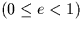

| JFORM | I | choice of element set (2 or 3; Note 1) |
|---|---|---|
| DATE0 | D | date of osculation (TT MJD) for the given |
| elements | ||
| DATE1 | D | date of osculation (TT MJD) for the updated |
| elements |
| EPOCH0 | D | epoch of the given element set (t0 or T, TT MJD; |
|---|---|---|
| Note 2) | ||
| ORBI0 | D | inclination (i, radians) |
| ANODE0 | D | longitude of the ascending node ( |
| PERIH0 | D | argument of perihelion
( |
| AORQ0 | D | mean distance or perihelion distance (a or q, AU) |
| E0 | D | eccentricity (e) |
| AM0 | D | mean anomaly (M, radians, JFORM=2 only) |
| EPOCH1 | D | epoch of the updated element set (t0 or T, |
|---|---|---|
| TT MJD; Note 2) | ||
| ORBI1 | D | inclination (i, radians) |
| ANODE1 | D | longitude of the ascending node ( |
| PERIH1 | D | argument of perihelion
( |
| AORQ1 | D | mean distance or perihelion distance (a or q, AU) |
| E1 | D | eccentricity (e) |
| AM1 | D | mean anomaly (M, radians, JFORM=2 only) |
| JSTAT | I | status: |
|---|---|---|
| +102 = warning, distant epoch | ||
| +101 = warning, large timespan (>100 years) | ||
| +1 to +8 = coincident with major planet (Note 6) | ||
| 0 = OK | ||
| -1 = illegal JFORM | ||
| -2 = illegal E0 | ||
| -3 = illegal AORQ0 | ||
| -4 = internal error | ||
| -5 = numerical error |
EPOCH = epoch of elements t0 (TT MJD) ORBINC = inclination i (radians) ANODE = longitude of the ascending node(radians) PERIH = argument of perihelion
(radians) AORQ = mean distance a (AU) E = eccentricity e  AORL = mean anomaly M (radians)
JFORM=3, suitable for comets:
EPOCH = epoch of perihelion T (TT MJD) ORBINC = inclination i (radians) ANODE = longitude of the ascending node
SLALIB --- Positional Astronomy Library